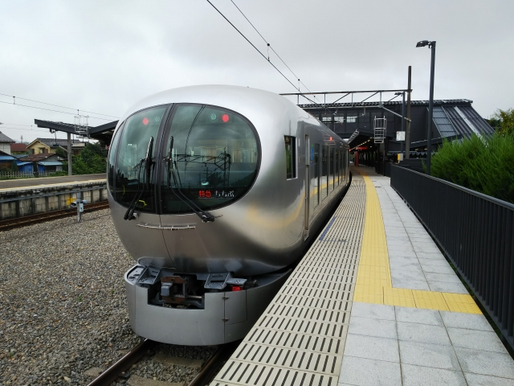
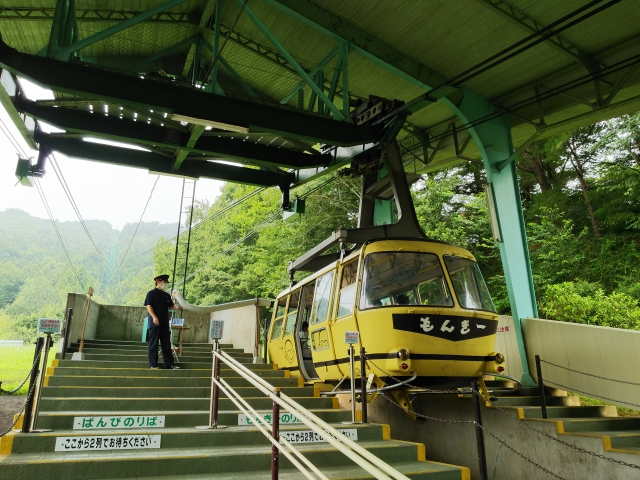

2021（R3）8月19～24日 東北温泉めぐり
オーダ不足が著しく、多めに夏休みが取れたので、学生時代のようなノリの旅をしてきました。

あいも変わらず、青春１８で移動です。自衛艦が見
えるここはどこすか？横須賀っす。
例のぼったくり貨物線の旅以来やな・・・

今日は全然涼しいですが、さすがに日が当たると暑
いな。

駅前の港沿いの公園に出ると、いずも型護衛艦と、
その右手にはもしかして・・・

南極観測船のしらせやないかいな！
しらせを見れるなんて、持ってるわ～

横須賀駅前からバスに乗って観音崎へ。

向かいは房総半島。意外と近いです。
かなり汚い水でしたが、結構な人が海水浴してまし
た。
昔は京急も、三浦半島の海水浴客でにぎわったと聞
いてたけど、今でも行く人おるんや。

ここから浦賀行のバスに乗換えます。

京急浦賀駅に到着。
なんか南国の雰囲気あります。

ここから堀之内までが京急唯一の未乗区間。
本日、京急全線完乗です！

京急久里浜で夕食を食べて、ＪＲの久里浜へ。
緊急事態宣言で、店で食べるには早めに済まさなあ
かんので、どのタイミングで夕食食べるかシュミレ
－ションしとかんと、えらい目にあいますわ。
横須賀線で都心へ向かいます。

さて、やって来たここはどこでしょう？
なんかリゾートっぽいかな？

ひと気のないホームに、モノレールが入ってきまし
た。

ジャジャーン！私にもっとも縁遠い、ネズミのデザ
インです。
一応「私鉄」扱いなので、乗ってみることに。
車内はずっとデスニーの音楽が鳴ってて閉口しまし
た。

実は次に乗るバスの出発地がデズニーランドなんす。
時間があったので、１週回ってから目的の駅で降り
ようと思ってたんやけど、係り員より客が少ない状
態で、目的地で降りざるを得ませんでした。
この１／４周の乗り残しが、あとあと響くような・
・・
って、私鉄全然乗りつぶしまでよーやらんから、そ
こまで考えんでも大丈夫か。

今晩は、福島まで夜行バスです。緊急事態宣言のお
かげか、片道２６００円と、破格の値段です。
もちろん４列シートですが、客もおらず、横にも人
は乗ってこないので、そこそこ快適でした。
この乗り場も、いつもなら、ねずみマークの土産袋
を抱えたねーちゃんたちで溢れかえってるんでしょ
うが、今はガラガラです。

朝の４時前に福島に到着。寒いっちゅーねん。
始発が７時過ぎと遅めなので、時間をどう潰そうか
と思ってたら、駅前にいいベンチが！最近の世知辛
い世の中だと、寝転び防止の仕切りがあるベンチが
多い中、寝転べるベンチはありがたいです。

始発の時間も近づいてきたので、起きて正面口へ。
今日は天気よさそうです。
ベンチで寝てたら、そんな私に「おはようございま
す」と声をかけてくれるおばっちゃんもいて、久々
に人の情を感じました。
（単なる不審者対策か？）

福島駅からは、米沢行に乗り込みます。
懐かしい標準軌用の車輛が健在でした。

板谷峠を通るのも久しぶりです。
板谷駅はスイッチバックが残ってました。

峠駅の餅売りも健在です。
先頭側に乗ってしまうと、停車中に買えそうにない
ので、欲しい方は後ろのほうに乗って下さい。

米沢で山形行きに乗換えです。次はクソみたいなロ
ングシート車ですわ・・・。

赤湯駅に到着。
赤湯温泉で朝風呂といきます。

温泉までは駅から１５分ほど歩かんとダメです。
見たことない広告、発見！

赤湯温泉には４つほど共同浴場があるのですが、一
番人気はここ、えぼしの湯。
しか～し、今日は定休日！残念。

近くの、とわの湯へ。
ここもなかなかいい湯でした。
そして、料金は１００円。申し訳ないぐらいです。
夜行明けの温泉は、最高っす。

しかし、いろいろ温泉場には行ってるけど、こんな
注意書き、初めてです。
厳しいっ！

赤湯温泉は、飲み屋が多い温泉場です。

バスで駅に戻ろうとしたけど、バス停が見当たらず、歩い
て戻るはめに。
（あるはずの場所にあったコンビニの店員に聞いても首か
しげるだけ。もっと公共交通を愛しなさい！と、ちょっ
とキレ気味）
駅前にあった、寿司屋。ここ、くら寿司の発祥の地やったっけ？

赤湯駅です。
山形新幹線が出来た時に、停車駅は軒並み新しくな
ってしまったみたいです。

赤湯から南下して、高畠駅へ。
元は糠ノ目駅と言ってました。そう、あの糠ノ目駅
です。

ここから高畠までは、昭和４９年まで、山形交通の
高畠線が走ってました。
廃線跡は自転車道になっているので、駅で自転車を
借りて、炎天下、いざ高畠を目指します。

竹ノ森駅跡。
ホームの跡がはっきり残ってます。

そして、少し登り坂になったと思ったら、突然目の
前に高畠駅が現れます。
ここ、来てみたかったんですよ！

ただ、なんとこの時期、郷土資料館で高畠線の記念
展をやってるとのこと！
やっぱ持ってるわ。
少し遠いけど、行ってみました。
ふた駅先の、八幡宮前駅の近くにありました。（展示内容は大したこと
はなく・・・）

高畠駅まで戻って、改めてゆっくり見学します。
駅構内は公園化されていて、往時の雰囲気がそのま
ま残ってます。

この地方の特産の「高畠石」を使った石造りの立派
な駅ですね。
私鉄の廃線跡地としては、国内最高峰だと思います。

車両も残されています。


往時の高畠駅。
寒い雪の日など、この駅舎にたどり着いたら、ほっと
したことだろうと想像できます。

現、高畠駅に戻ってきました。疲れ切ったわ。
最近では、米沢市内と高畠を結ぶバスも廃線になっ
てしまったとのこと。
公共交通の衰退は著しいなぁ・・・。
往時の糠ノ目駅。
ふたつ上の写真と、ほぼ同じ位置からの写真ですね。

米沢駅に戻ってきました。
米沢牛が迎えてくれます。
（もーマスクとか、ええっちゅうねん）

米沢駅舎です。
もーこの辺は学校始まってるんかな？

米沢といえば上杉っすよね。
自転車を借りて、行ってみたかった上杉家廟所へ。
謙信から十二代藩主までの廟屋が並んでるのですが、
さすが謙信公は別格扱いで、奥まったセンターの位
置に少し大きめに建ってました。
謙信は没後、甲冑を来た姿で大きな甕に収められて
漆で密封したまま春日山に埋葬され、上杉が米沢に
移封後、ここにそのまま移されたそうです。
そんな霊験あらたかな所で、昼食のおにぎりを食べ
ました。怒られるわ。

次に米沢城跡にある上杉神社へ。
上杉の本拠地やったのに、神社でしか残ってないと
いうのは残念です。
このああと、しばらく自転車で街をぶらつきました
が、商店街も見当たらず、思ってたより寂しい街で
した。

駅前に戻ってバスに乗り込みます。
ポツポツ来たなと思ってたら、すぐに大雨に！
自転車乗ってる時やなくて助かった。

どしゃ降りのまま、次の目的地、小野川温泉に到着。
共同浴場が２箇所あり、尼湯（尼崎とは無関係です）
のほうに入ることにします。
ここも１００円！山形の温泉、最高です。硫黄の香り
のするいい湯でした。

温泉から上がると、小ぶりになってました。
温泉旅館もまぁまぁあるし、やってるお土産屋さんも
あって、「生きてる温泉場」という感じでした。

玉こんにゃく、山形らしいですね。
食べてませんが・・・

今日の予定はこれにて完了。バスで米沢市内に戻り
ます。
ほんま、疲れましたわ。

市内のスーパーで見かけたポスター。これも山形ならでわですね。
コロナなんか気にせず、芋煮大会、どんどんやって下さい！
ちなみにこのスーパーの魚コーナーには、トレーに山積みでほやが売
られてました。内陸の米沢でも売ってるとは、東北の人にとってほや
ってかなりメジャーなんすね。
しかし米沢って、かなりボロくてやってないと思われる建物の店も、
結構営業してる店が多くありました。こんな街、あまりないなぁ。


翌日、今日も青春１８切符で北上していきます。
写真は撮れてませんが、始発の米坂線も、国鉄型で
はなく新車でした。
米沢からの電車は、運悪くロングシート車や・・・

山形駅到着。
やっぱり新幹線は存在感あります。

鉄分不足の方へ。左沢線のディーゼルカーですよ。

久々に山形に来たけど、こんな駅やったっけな。

ここからは仙山線で仙台へ。
クロスシート車で良かった～
仙山線も久々でしたが、車窓から山寺が見えたりし
て、好きな線です。

さて、仙台からはちょっと寄り道します。
駅前からバスに乗って着いたのは村田の街です。
最近、蔵の街として知られてきてます。

期待してなかったのですが、なかなかの光景です。

西日本ではなかなか見られない、重厚な街並みでし
た。
江戸時代、山形と仙台を結ぶ街道沿いに位置してい
ので、北前船の交易で栄えたそうです。

仙台に戻って、北上を続けます。
接続がよすぎて、食事はどうしても車内で済ますこ
とになってしまいます。
となるとコンビニは心強い味方ですね。
駅近くにコンビニのある国府多賀城駅で途中下車し
ます。

駅前から見える、先の方にある林のあたりが、多賀
城跡です。

小牛田で乗り換えて、一ノ関駅到着。
この構図、年明けも見せましたね。岩手に入ると紫
帯の北東北カラーの車輛になります。

今日の最後の目的地に到着。
この顔出しパネルは・・・

じゃじゃーん!平泉です。
行ってない３大観光名所のひとつでしたが、とうと
うやって来ました。
（さて、残り２カ所はどこでしょう？）

さっそくレンタサイクルを借ります。
いろんなところで自転車借りてきたけど、セルフは
初めてでした。
どこかで借りた自転車みたいに、パンクでもしたら
どこに怒鳴りこめっちゅうねん・・・
でも、有人の店より安かったので、これにしました。
自動販売機に金入れたら、カギ入りのカプセルが出て
くる仕組み。

中尊寺の入口です。
実はここからが長かった・・・
坂道を登らなアカンので、かなりバテました。

金堂です。
苦労して来た甲斐はありました。
横の博物館と合わせて、必見ですわ。
奥州藤原氏って、やっぱすごかったんやな・・・
覆い堂がなかった頃って、太陽の光が当たって輝
く姿ってすごかったんやろなと想像できます。

次に無量光院跡へ。
平泉駅を出てすぐの車窓が、実は無量光院跡と行って
初めて知りました。

平等院のような建物があったとのことで、見たかっ
わ～。

駅に戻る途中の工事現場。
動物バージョンは色々見たけど、わんこそばって・・・。

引き続き北上します。
北上駅に到着。

北上線の分岐駅ですね。
久々に北上線に乗り込みます。

乗りとおすのは２回目ですが、前回は冬やったので
ずっと雪景色でした。
今回は夏の景色を楽しみたいと思います。
前方の山を越えて行きます。

非電化単線の鉄旅を堪能して、終点の横手に到着。

久々に降りてみたかった横手駅ですが、時間がなく断念。
駅舎は新しくなってもうてました。

ここからは秋田行きに乗換えます。
この写真の右奥のあたりに、昭和４６年まで、羽後
交通の横荘線の横手駅がありました。

ロングシート車でのクソみたいな移動ですが、途中
面白い光景が見れます。
日暮れには間に合った。

そう、３線区間です。
今乗ってる車両は狭軌なので、幅の細いほうを走っ
てます。

運よく、こまちとすれ違い！

ようやく秋田到着。
男鹿線も、もう国鉄型ではなくなってました。

そして旅はまだ続きます。
本日のラストランナーは、快速です。
といっても、クソなロングシート車です。

とうとうゴールの弘前到着。
もう疲れはてました・・・

翌朝、弘前駅。なんかあやいし雲行きの天気です。

バスで本日の最初の目的地へ。

りんご畑の横を通るなど、青森らしい風景です。
車窓からは、なんとか岩木山が顔を出してます。

岩木山の中腹に位置する、嶽温泉に到着です。

じゃじゃ～ん。ここが有名な田澤旅館です。
ここの温泉がなかなか雰囲気があるとのこと。
朝からやってます。

旅館の入口でお金を払って、温泉へ。
ちょうど日曜の朝で、経営者家族のちっちゃい子どもがたくさん楽しそう
に過ごしてました。
令和感も全然なく、こんな幸せオーラが出てる光景は、なかなかお目にか
かれません。
幸せを感じたい人は、田澤旅館に急いでください。

ここか。

この奥が温泉やな。

少し白濁した、いいお湯でした。ちょっと熱かったけど。
この奥側にも少し大きめな湯船があって、そこは混浴みたいでした。
誰もおらんで良かった。

嶽温泉。
５～６件の温泉旅館が散在してます。観光客向けと
いうより、近場のお客さん向けって感じですね。
「嶽きみ」というトウモロコシが名物みたいで、い
たるところで売ってます。

弘前市内に戻ります。


弘前市内の様子。古い洋風の建物が多く残っていて、街に溶け込んで
ますね。

さて、次に向かったのは弘南鉄道の弘前駅。
ＪＲの弘前駅に隣接しています。
しかし、なんやこの自転車。

そうです、サイクルトレイン初体験っす。
市内で自転車借りて、一緒に乗り込みました。

途中の平賀駅で下車します。

車庫も併設された、主要駅です。

駅舎は地方鉄道っぽくない、でかいビルです。
農協の建物の一部が駅舎になってます。
ここからは、自転車で、温泉マニアには有名な新屋
温泉に向かいます。
自転車で２０分ぐらいかかるんやけど、雨が降って
きた・・・とほほ

雨に打たれながら到着したら・・・
なんと、設備故障で休み！出発前にホームページで確認したけど、そんな
こと書いてなかったやないかっ！！
ふざけとんのか！って、思わず声に出して言ってしまいました
しかし、まじで入りたかった・・・。
こんな感じです↓
https://www.ne.jp/asahi/araya/onsen/

失意の中、雨に打たれながら平賀駅に戻りました。
雨も小降りになり、せっかくなので、一駅先まで自
転車で戻ります。
車庫を敷地外から眺めます。

弘南鉄道名物のラッセル車もいてました。

元東急車両が、倉庫になってる！

次の駅に到着。
新屋温泉に行くよりよっぽど近いわ。

館田駅。いい雰囲気の駅舎です。

ホーム側より。もちろん無人駅です。


ホームに上るのが階段しかないので、少し苦労しま
す。
反対行の電車が到着。この駅で上下の交換です。

来た来た。
しかし、無人駅の場合、先頭から乗り込んで、最後
尾まで自転車を押していかんとダメなんです。
乗客から好奇な目で見られながら、通路を自転車を
押して最後尾まで行くという、シュールな状況でし
た。

終点のひとつ手前の弘前東高校前駅で下車。
ここも無人駅なので、今度は最後尾から先頭まで自
転車を押して車内を進みます。
やったら先頭におらしてくれたらええやんけ！
（口には出してません）

自転車やと、こういいうふうにいろんな駅で乗り降
り出来るのでいいっすね。
この駅はホームからスロープがあって助かりました。


街の中心部まで自転車を返しに行きます。
返した後は、弘南鉄道のもう一つの路線で次の目的
地兼本日の宿に向かいます。

中央弘前駅。やけど・・・
駅はそのままやけど、まわりはえらい変わってもう
てるやん！

駅舎がそのままなのは、感謝すべきか？

左右の添付スペースは昔と変わってるみたい。
左側は、意外にもおしゃれなギャラリースペースみ
たいです。


ホームの顔出し看板は、ラッセル車のキャラクター？

弘前ねぷたの飾りをした編成も走ってるっちゅうの
で、それを期待しつつ・・・

大鰐行に乗り込んでみると・・・

妖怪列車？

ん～、コンセプトは否定せんし、頑張ってるとは思
んやけど、ちょっとちゃちすぎへんか？？
初めて電車に乗るって喜んでる子どもも乗り合わせ
てましたが、電車ってこういうもんと思ってもうた
らどないしょ・・・

こちらの路線も、デキとラッセルは健在でした。

りんご畑をぬって、大鰐到着。

変わってなかった。

もう、こんな感じでＪＲの駅のはしっこにポツンと
存在してる地方鉄道の駅も、数少なくなってきたな
ぁ

弘南鉄道の大鰐駅舎。
対して、ＪＲの大鰐温泉駅。
昔はこちらも「大鰐」駅でしたが、ありがちな「温泉
」付の駅名になってしまいました。
横に並んでますが、さすがに規模が違う。
足湯があったので、しばし休憩。
奥羽本線に乗って、秋田との県境にある津軽湯の沢
駅に到着。
この駅、１２月から３月までは、鈍行さえ通過する
秘境駅です。
この駅に、今晩の宿の古遠部温泉の方が迎えに来て
くれてます。
駅から１０分ぐらい車で走って、古遠部温泉到着。
館内は一切撮影禁止とのこと。なんかへんこな宿な
んかな・・・
こんな温泉です。↓
http://www.furutoobe-onsen.com/content1.html
入口には、「ワクチン接種者以外は出入り禁止」と
いう、かなり厳しめの貼紙が。
電話で予約した時、正直に未接種って伝えたんやけ
ど、そん時はかなり悩んで、まぁいいでしょうとい
回答でした。
たぶん、私の予約のあと、貼られたと思われます。
温泉は、とど寝を推奨するぐらい、湧きまくってます。ちょっと熱いけど・・・
東北には珍しく、鉄分系の温泉でした。
やっぱかけ流しはいいっすね。日帰りの地元客も来てるんやけど、マジで何しゃ
べってるんか、日本語全くわかりませんでした。
ワクチン未接種のやりとりもあったので、めちゃめちゃ謙虚な態度で過ごしてま
した。
「泊まらせてくれて、ありがとうございますっ」的な。
翌朝、駅まで送ってもらいました。
ちなみに、昨夜のおかずにほやが出ました。半分は
食べたけど、そこまでで限界！
行きは会話のなかった宿のおやじさんやけど、帰り
はしゃべってくれました。
なんと大阪で会社をやってたとのこと。意外！
津軽湯の沢駅。
もちろん、まわりに何もございません。
さて、長かった旅も、帰りの行程になります。
奥羽本線で南下していきます。
大館駅に到着。
大学時代、この駅の軒先で野宿した思い出は強烈で
す。
虫よけ持ってなくて、蚊の襲来に耐え切れず、最後
は便所に入って耐えました。
その懐かしい便所も、残ってました。
乗換えの時間があったので、駅前をぶらつきます。
秋田犬の里、なる施設が駅前にあって、そこの庭
の部分に、青カエルが！
そういや、渋谷から移ったっちゅうニュースあっ
たような・・・
中にも入れて、椅子も残ってました。

先のほうに進んで行くと・・・線路があります。
そういや、ここは元同和鉱業の駅やったとこでした。
線路はＪＲまでつながってます。
大学の時、小坂まで乗ったけど、カメラ持ってなかったので、写真は撮ってま
せん。今思うと、もったいなかった・・・
ここから、花輪線に乗って盛岡に抜けます。
北上線の横手にもあったけど、この終点ボード、本州横断路線には全部あるんや
ろか。
久々に花輪線に乗ります。前回は景色が良かった記
憶があるので、期待大です。
沿線で大きな駅のひとつ、十和田南駅に到着。
昔の鈍行のように、主要駅で１０分程度停車してく
れるのでありがたい。
ちょっとうろつきます。
この駅、スイッチバックになってます。
昔は十和田湖観光で賑わったのかな？
上下交換して、出発。
沿線最大の街、鹿角花輪駅に到着。
ここでも１０分程度停車してくれます。
十和田南の駅舎とよく似てます。
平日の午前のローカル線って、のんびりしてていい
っすよね。
初乗りの時ほどの感動もなく、盛岡に近づいてきま
した。車窓からは岩手山が見えます。
盛岡駅に到着。久々に来たけど、あまり変わってな
いですね。
しかしＪＲ東エリアの駅って、青春１８切符の日付
をめっちゃ確認しよる。とっととチェックせえっち
ゅうねん。
今日の行程は余裕あるので、またまた平泉で途中下
車。行きには寄れなかった毛越寺へ。
思ってたより広大な敷地で、やっぱり奥州藤原氏は
ぶっとんでるわ。
しかし、平泉の名所を２回にわけて訪ねるなんて、
いい意味で余裕のある旅が出来るような身分になっ
んやなぁ。ようわからんけど。
この後、仙台から夜行バスで新宿へ。そのまま向か
うと仙台に早く着きすぎて、このご時世、店も開い
てないので、石巻まで寄り道して、駅前のベンチで
缶チューハイと揚げ物の夕食をいただきました。
客観的にみたら、完全にヤバいジジいですね。今回
の旅は、駅前のベンチにとてもお世話になりました。
仙台ではバスの乗り場がしばらくわからなくて焦り
ました・・・

さて、いよいよ最終日。時間通り新宿に到着。
もちろん、直接帰るわけもなく・・・
やって来たのは東飯能駅。
しばらく歩いて、西武の飯能駅へ。

西武の飯能駅も、スイッチバック構造ですね。
ちょっと秩父まで寄り道です。
じゃ～ん！新型特急のＬａｖｉｅｗが来ました！
秩父行の最初の特急です。
朝も早いので、ガラすきですわ。
飯能から方向が変わるのですが、ほとんどの人は、席の向きを変えません。
このシート、座り心地は最高です。
嬉しがって、車内を探検しました。
しばし、かぶりつき席で過ごしました。

西武秩父に到着。
ほんま、窓でかいわ。
乗った時には、外から見られてることを意識しとい
て下さい！

Ｌａｖｉｅｗ、かなり気に入りました。
現時点で、私鉄特急の３本指に入りますね。
皆様も、是非乗って見て下さい。
私も、次は池袋まで乗りとおしてみたいです。

西武秩父は秩父市街からは離れてます。
秩父鉄道の秩父駅まで歩いてみます。結構レトロな建物が中心街に
は残ってます。意外でした。
秩父駅に到着。駅ビルがでかいなぁ。
というか、駅は間借りしてる感じやね。
長瀞までの切符を買います。
この旅の最終目的地へ向けて出発します。
長瀞駅到着。
長瀞駅は、昔から変わってませんね。
駅前から、山に向かって歩いて行きます。
さすがに平日は観光客いませんね。
「最終目的地」が見えてきました。
暑い中、１５分ぐらい登っていくと、見えてきまし
た。
そう、ロープウェイっす。

最終目的地は、このレトロなロープウェイです。
この塗装、実は昔の秩父鉄道と合わせてるとのこと
です。
６０年ぐらい経ってます。
いい感じですね。
山頂は曇ってました。
次の便ですぐに引き上げます。
もう１台の名前は「ばんび」でした。
なんとか、末永く活躍してほしいですね。
帰りは、若干近いと思われた上長瀞駅へ。
しかし、なんとあと一歩で乗り遅れ。
キレる元気もありませんでした。
でもええ感じの駅舎でした。
レトロな駅舎の中で、必死に帰りのダイヤ調べまし
た。スマホはこういう時、めちゃ便利っすね。
元々は熊谷まで抜けて帰る予定でしたが、来た道を
戻らんと、今日中に帰れないみたいです。
駅もホームも、長瀞駅よりよっぽどデカいです。
秩父方面行の電車がやってきました。
さて、帰るとするか。
秩父の夜祭は一度行ってみたいので、その際に秩父
鉄道の渋い駅舎なんかもゆっくり巡ってみたいもん
です。
途中、貨物列車とすれ違い。
やっぱり持ってるわ～。
西武秩父から、帰りは普通で帰ります。
この車両、クロスシートなんで良かったです。一昔
前のＪＲ車両みたいなトイレも付いてました。
こういうのって、関東私鉄独特やね。
出発待ってたら、またまた貨物が来た。
そんな珍しいことやなかったんか・・・
普通に乗ると、交換で長めに停車することが多いで
すね。
東飯能駅到着。
最初の予定では、湯河原あたりで温泉でも、と思っ
てたけど、そんな時間はないので、ここからは八高
線に乗換えて素直に帰りました。
夜遅く、無事宝塚に到着。
さすがに今回の旅は、疲れた！
そろそろ特急や新幹線で旅したい～！！
返りの行程の地図も載せろ！と、ファンからキレられた
ので追加します。
八高線から横浜線で横浜まで出ました。
これより先は、東海道をそのまま西下しただけなのでご
勘弁を・・・